2. Условия производства работ
2.1. Установка программного обеспечения производится с прекращением функционирования системы на диспетчерском кругу
2.2. Работа производится электротехническим персоналом, имеющим группу по электробезопасности при работе в электроустановках до 1000 В не ниже III, перед началом работ проинструктированным в установленном порядке.
2.3. К работе допускается обслуживающий персонал, прошедший специальную подготовку и выдержавший испытания в знаниях условий эксплуатации системы в соответствии с процедурами, принятыми в ОАО «РЖД».
2.4. Допуск на объект, оформление записей в журналах, контроль качества работ, выполняемых подрядными организациями, участие в приемке выполненных работ осуществляется эксплуатационным персоналом в соответствии с требованиями Инструкции по техническому обслуживанию и ремонту устройств и систем сигнализации, централизации и блокировки, утвержденной распоряжением ОАО «РЖД» от 30 декабря 2015 г. № 3168р.
5. Обеспечение безопасности движения поездов
5.1. Установка программного обеспечения производится в технологическое «окно» с согласия поездного диспетчера (далее – ДНЦ).
5.2. Работа выполняется с оформлением записи в Журнале осмотра путей, стрелочных переводов, устройств сигнализации, централизации и блокировки, связи и контактной сети формы ДУ-46 (далее – Журнал осмотра).
5.3. Работа выполняется на системных блоках АРМ ДНЦ, АРМ ШН и Сервере стойки поста ДЦ.
5.4. Операционная система должна быть предустановлена и настроена заранее в соответствии с картой технологического процесса КТП ЦШ 1475-2021 «Диспетчерская централизация «Юг» с КП «Круг». Центральный пост. Проверка базовых настроек/параметров компьютера».
5.5. Установка программного обеспечения выполняется в соответствии с Инструкцией по приёмке в эксплуатацию и сопровождению программного обеспечения устройств и систем железнодорожной автоматики и телемеханики, утвержденной распоряжением ОАО «РЖД» от 23 декабря 2020 г. № 1042/р.
5.6. При выполнении работы обеспечить безопасность движения в соответствии с требованиями Инструкции по обеспечению безопасности движения поездов при технической эксплуатации устройств и систем СЦБ ЦШ-530-11, утвержденной распоряжением ОАО «РЖД» от 20 сентября 2011 г. № 2055р.
Примечание. Здесь и далее по тексту целесообразно проверить действие ссылочных документов. Если ссылочный документ заменен (изменен), то при пользовании данной картой технологического процесса следует руководствоваться заменяющим (измененным) документом. Если ссылочный документ отменен без замены, то применяется та часть текста, где не затрагивается ссылка на этот документ
7. Технология выполнения работ
Установка технологического программного обеспечения (далее – ПО) выполняется в процессе обслуживания и сопровождения системы либо при замене промышленных компьютеров из состава оборудования центрального поста системы ДЦ, либо при замене жестких дисков, либо при нарушении целостности файловой системы и файлов ПО системы ДЦ.
Для установки используется компакт-диск с копией эталонного дистрибутива ПО.
Оформить запись в Журнале осмотра.
Пример записи:
В технологическое «окно» специалистами сервисной организации будет производиться работа по установке программного обеспечения на системных блоках АРМ ДНЦ, АРМ ШН и Сервере стойки поста ДЦ.
ШНД
ДНЦ
7.1. Установка технологического программного обеспечения.
7.1.1. На целевом компьютере АРМ ДНЦ или стойки поста ДЦ, находящемся в резерве, войти в систему с правами администратора и вставить компакт-диск дистрибутива в привод CD-ROM, при этом автоматически запускается программа «Install.exe».
ВНИМАНИЕ: Если функция автозапуска отключена, надо запустить программу «Install.exe» из корневого каталога компакт-диска от имени администратора вручную.
7.1.2. В открывшемся диалоговом окне выбрать диспетчерский участок и требуемый набор комплексов ПО (Рисунок 1).
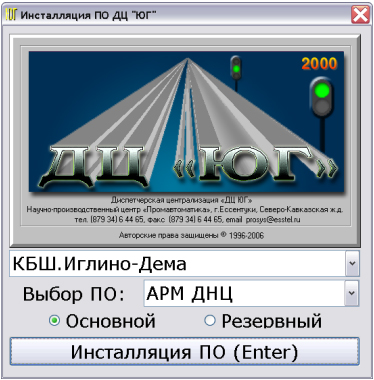
Рисунок 1. Диалоговое окно при установке ПО.
ВНИМАНИЕ: Необходимо убедиться, что название участка соответствует целевому участку. Если инсталлятор содержит ПО нескольких участков, необходимо выбрать нужный в выпадающем списке участков.
ВНИМАНИЕ: Меню «Выбор ПО» содержит следующие опции, позволяющие выбрать тип рабочего компьютера и тип инсталляции:
- Станция связи (устанавливаются компоненты Станция связи, АРМ ШН, Протокол). В случае использования станций связи Ретайм это поле не используется, а ПО станций связи устанавливается с отдельного компакт диска.
- Шлюз/сервер (устанавливаются компоненты шлюзового ПО);
- АРМ ДНЦ (устанавливаются компоненты Управление, Табло, График);
- Все комплексы (устанавливаются все компоненты, используется для тестирования инсталляции на одном компьютере).
ПРЕДУПРЕЖДЕНИЕ: Опция «Все комплексы» используется для общей отладочной проверки всех программных комплексов и использоваться при установке ПО не должна.
7.1.3. В меню «Выбор ПО» выбрать тип рабочего компьютера, набор устанавливаемого ПО, а также корректно установить флажок «Основной»/«Резервный».
ВНИМАНИЕ: Некоторые настройки ПО основного и резервного компьютеров могут отличаться.
7.1.4. Нажать кнопку «Инсталляция ПО (Enter)».
ВНИМАНИЕ: Установка ПО начинается с запроса пароля, уникального для диспетчерского участка. Пароль хранится в запечатанном конверте дистрибутива.
ВНИМАНИЕ: Инсталлятор в зависимости от выбранной конфигурации и особенностей объекта автоматически запускает те или иные командные файлы, выполняющие извлечение из архива и установку нужных файлов на жесткий диск компьютера, настройку системного и прикладного ПО.
ПРИМЕЧАНИЕ: Установка ПО производится в базовую папку «c:\ArmDnc». Если на компьютер устанавливается ПО более чем одного участка, имя базовой папки формируется с учетом индекса инсталляции: для второго участка – «c:\ArmDnc_2», третьего – «c:\ArmDnc_3» и так далее. Признаком индексированной инсталляции является опция [N] в идентификационном файле ID на инсталляционном диске, где N – индекс инсталляции.
7.1.5. После корректного ввода пароля инсталлятор запрашивает необходимость удаления файлов предыдущей версии ПО.
ВНИМАНИЕ: Если выбрана опция удаления существующей версии ПО, автоматически запускается командный файл «_uninstall.cmd», который в свою очередь удаляет ветку реестра «HKEY_LOCAL_MACHINE\SOFTWARE\PA» с настроечными параметрами, удаляет ярлыки прикладного ПО, останавливает и удаляет службы «paService» и «paArchiveService», удаляет файлы и папки базового каталога инсталляции.
7.1.6. Далее автоматически запускается командный файл «_setup.cmd», устанавливающий необходимые системные библиотеки (распространяемый пакет библиотек «Visual C++ 2010», платформу «.NET 2.0»), файлы базового и адаптированного прикладного ПО.
ВНИМАНИЕ: Инсталлятор самостоятельно отфильтровывает из полного набора файлов необходимый набор в зависимости от типа установки.
7.1.7. Далее автоматически запускается командный файл «_makeusers.cmd» для создания пользователей и назначения им прав, создать прикладных пользователей: Админ (права администратора), ШН (права опытного пользователя), ДНЦ (права пользователя).
ВНИМАНИЕ: Рекомендуется в работе системы использовать учетные записи пользователей с ограниченными правами.
ПРИМЕЧАНИЕ: На этапе инсталляции все пользователи включаются в группу «Администраторы» для выполнения необходимых настроек. На заключительном этапе после перезагрузки системы права администратора учетных записей ШН и ДНЦ снимаются, на этом же этапе ярлыки прикладного ПО копируются в папку пользователя по умолчанию для последующего переноса на рабочий стол пользователя и назначаются права доступа вновь созданных пользователей к рабочим папкам прикладного ПО.
7.1.8. Выполнить настройку сетевых интерфейсов.
ВНИМАНИЕ: Если диспетчерские учаcтки работают в изолированных сетях ЛВС и имеют фиксированные IP-адреса, то первый сетевой адаптер называется «ЛВСДЦ», второй сетевой адаптер шлюза-сервера называется «СПД», здесь же устанавливаются фиксированные IP-адреса адаптеров: станция связи - 192.168.1.11, шлюз-сервер - 192.168.1.13, АРМ ДНЦ - 192.168.1.16. IP-адрес второго сетевого адаптера шлюза-сервера устанавливается в зависимости от значения опции «SPD» настроечного файла шлюза-сервера «bridgetcp.ini».
ВНИМАНИЕ: Если сеть ЛВС общая настройка сетевых интерфейсов производится администратором системы вручную в соответствии с принятой политикой и организацией сети ЛВС.
7.1.9. Далее автоматически запускается командный файл «_firewall.cmd» и выполнить настройку брандмауэра, при этом создаются исключения, необходимые для организации межсетевого взаимодействия прикладного ПО системы: разрешается работа нужным программ, открываются необходимые порты: TCP (1010, 7433, 8080) и UDP (64465).
ВНИМАНИЕ: При ручной настройке параметров сетевых соединений брандмауэры сетевого подключения изолированной ЛВС ДЦ можно отключить. Брандмауэр сети общего пользования должен быть обязательно включен со следующими исключениями: порт Шлюза СПД (по умолчанию принят 1010), порт SQL Server (7433), порт удаленной загрузки (8080).
7.1.10. Далее автоматически запускается командный файл «_services.cmd», который инсталлирует системные утилиты общего пользования в папку «c:\Utils», а затем инсталлирует и запускает службы «paService» и «paArchiveService».
7.1.11. Далее автоматически запускается командный файл «_userset.cmd», который выполняет настройку переключения раскладки клавиатуры, настройку режима экономии электропитания, отключает экранную заставку для текущего пользователя, формирует параметры для автоматического логина целевого пользователя системы: ДНЦ для АРМ ДНЦ, ШН для Станции связи и Шлюза-сервера. Здесь формируется задание на автоматический однократный запуск командного файла «_userset.cmd» при первом логине целевого пользователя после перезагрузки: на этом этапе производится аналогичная настройка переключения раскладки клавиатуры, настройка режима экономии электропитания, отключение экранной заставки для целевого пользователя.
7.1.12. По завершению установки инсталлятор предлагает перезапустить операционную систему для вступления обновленной версии ПО в действие. Необходимо выполнить перезапуск.
ВНИМАНИЕ: После перезагрузки система должна автоматически запуститься от имени целевого пользователя установленного ПО.
ПРИМЕЧАНИЕ: Протокол работы инсталлятора записывается в файлы «c:\installdcw.log» (протоколирование собственно инсталлятора) и «c:\installdc.log» (протоколирование работы консольных командных файлов). После перезапуска системы и окончания установки ПО лог-файлы инсталлятора копируются в папку «c:\ArmDnc\Log».
7.1.13. Оформить запись в Журнале осмотра.
Пример записи:
В технологическое «окно» будет произведено переключение с основного АРМ ДНЦ на резервный и управление с резервного АРМ ДНЦ.
ШНД
ДНЦ
7.1.14. Провести переключение активности с основного АРМ ДНЦ на резервный согласно ТНК ЦШ 0197-2016.
7.1.15. Выполнить установку технологического программного обеспечения на основном АРМ ДНЦ в соответствии с пунктами 7.1.1-7.1.12.
7.1.16. Выполнить установку технологического программного обеспечения на АРМ ШН в соответствии с пунктами 7.1.1-7.1.12.
7.2. Установка программного обеспечения SQL-сервера.
Установка SQL-сервера производится инсталлятором автоматически при установке ПО Шлюза-сервера. Выбор версии устанавливаемого SQL-сервера производится автоматически в зависимости от версии операционной системы.
Для операционной системы Windows XP/Server 2003/ Windows 7 устанавливается версия SQL-сервера MSDE-2000 SP3. Для операционной системы Windows Server 2008/Windows 10 и выше устанавливается SQL Express 2012 SP3.
Установка SQL-сервера производится полностью автоматически в процессе работы инсталлятора прикладного ПО и не требует ввода дополнительных сведений.
ПРЕДУПРЕЖДЕНИЕ: При установке MSDE2000 в операционной системе Windows 7 система выдает предупреждение, что у программы есть проблемы совместимости (Рисунок 2), в этом случае необходимо игнорировать предупреждение и продолжить выполнение инсталлятора кликом кнопки «Запуск программы».
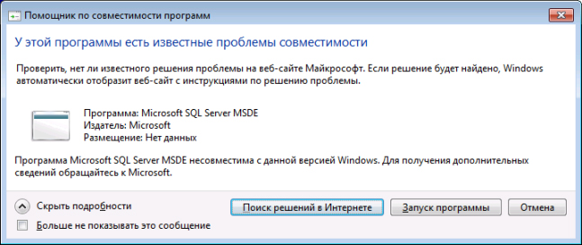
Рисунок 2. Предупреждение о проблеме совместимости.
7.2.1. Запустить командный файл «_sqlinstall.cmd» для установки прикладных баз данных.
7.2.2. Запустить загрузку «Правил поддержки установки» и нажать кнопку «ОК» (Рисунок 3).
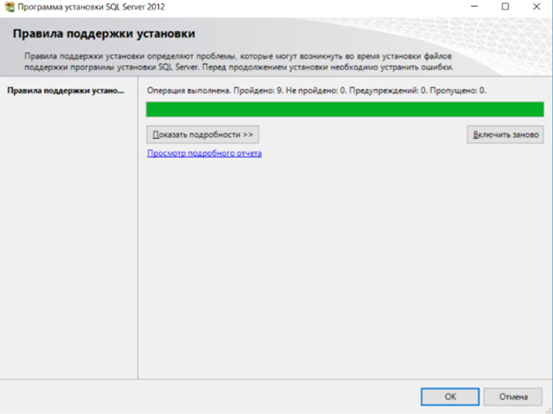
Рисунок 3. Запуск загрузки ПО.
7.2.3. Оставить выбор типа по умолчанию: «свободный выпуск» «Express».
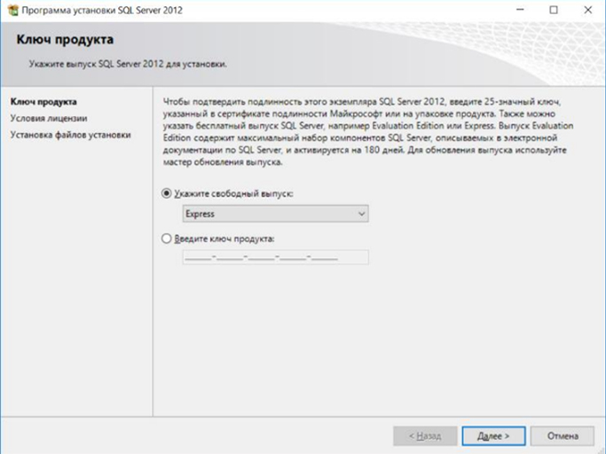
Рисунок 4. Выбор типа выпуска.
7.2.4. Убедиться, что все правила загружены, нажать «Далее» (Рисунок 5).
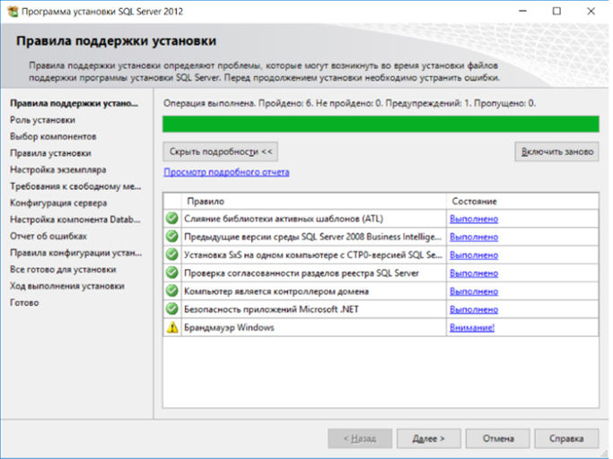
Рисунок 5. Загрузка правил.
7.2.5. Выбрать «Все компоненты со значениями по умолчанию» во вкладке «Роль установки», нажать «Далее» (Рисунок 6).
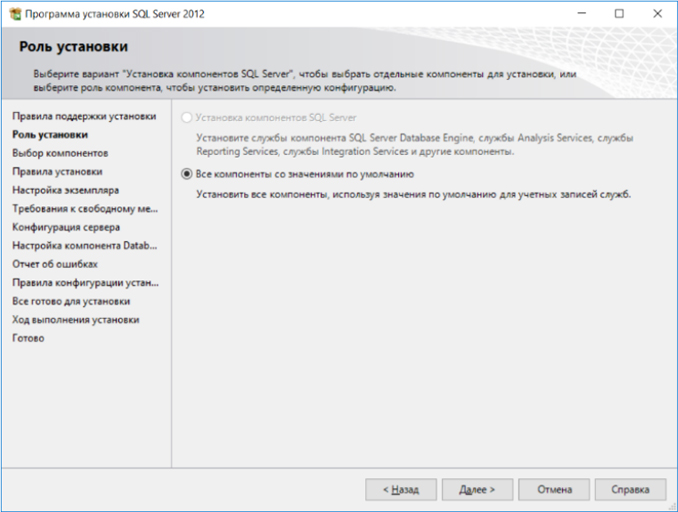
Рисунок 6. Выбор параметров установки.
7.2.6. Нажать кнопку «Выделить все» в «Компоненты экземпляра» во вкладке «Выбор компонентов», нажать «Далее» (Рисунок 7).
ВНИМАНИЕ: Обратить внимание на то, в какой каталог на диске «С:/» записывается программное обеспечение.
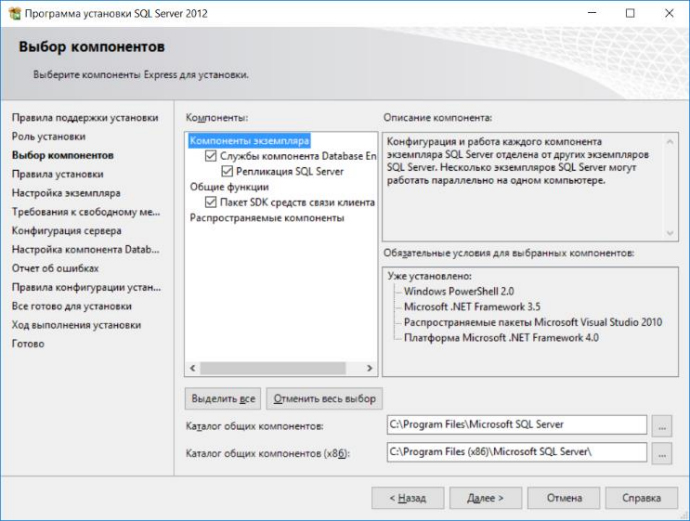
Рисунок 7. Выбор компонентов.
7.2.7. Убедиться в успешном завершении установки «Правил установки», нажать «Далее» (Рисунок 8).
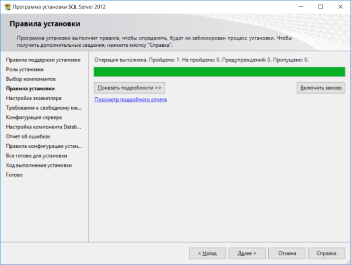
Рисунок 8. Завершение установки «Правил установки».
7.2.8. Проверить выбор опции «Экземпляр по умолчанию» и значение «MSSQLSERVER» в поле «Идентификатор экземпляра» во вкладке «Настройка экземпляра» как показано на рисунке, нажать «Далее» (Рисунок 9).
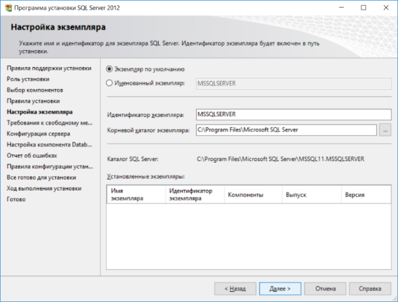
Рисунок 9. Настройка экземпляра.
7.2.9. Во вкладке «Требования к свободному месту на диске» проверить состояние памяти на диске «С:/», нажать «Далее» (Рисунок 10).
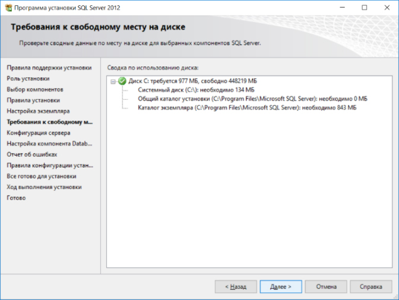
Рисунок 10. Проверка состояния памяти на диске.
7.2.10. Во вкладке «Конфигурация сервера» выбрать «Ядро СУБД SQL Сервер», нажать «Далее» (Рисунок 11).
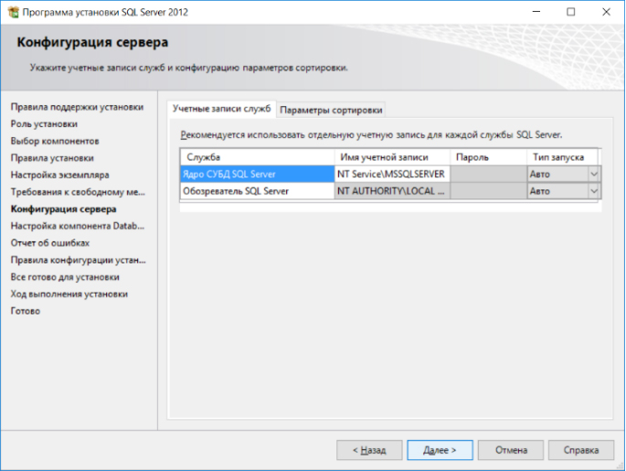
Рисунок 11. Выбор конфигурации сервера.
7.2.11. Выбрать способ аутентификации и проверки подлинности администратора, нажать «Далее» (Рисунок 12).
ВНИМАНИЕ: Выбрать опцию «Смешанный режим (проверка подлинности SQL Server и Windows). Пароль установлен в соответствии со сценарием, смена пароля не предусматривается.
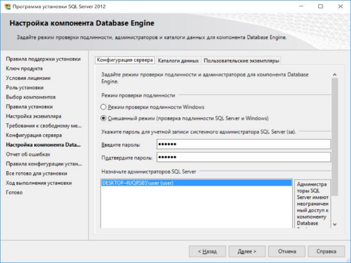
Рисунок 12. Проверка аутентификации и подлинности администратора.
7.2.12. Во вкладке «Отчет об ошибках» нажать «Далее» (Рисунок 13).
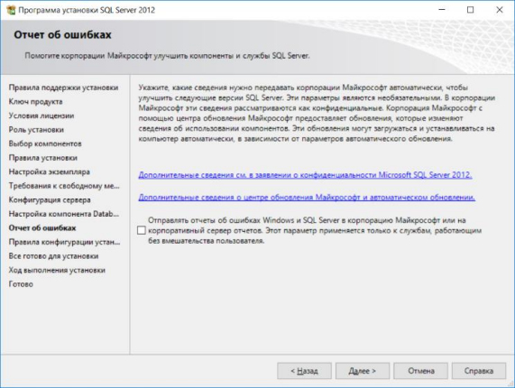
Рисунок 13. Отчет об ошибках.
7.2.13. Убедиться в успешном завершении установки «Правил конфигурации установки», нажать «Далее» (Рисунок 14).
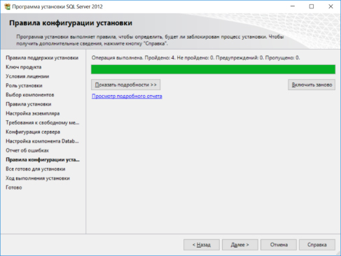
Рисунок 14. Завершение установки «Правил конфигурации установки».
7.2.14. Нажать кнопку «Установить» во вкладке «Все готово для установки» (Рисунок 15).
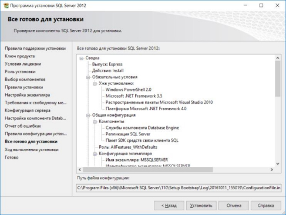
Рисунок 15. Установка ПО.
7.2.15. Убедиться в том, что программное обеспечение установлено и нажать кнопку «Закрыть» (Рисунок 16).
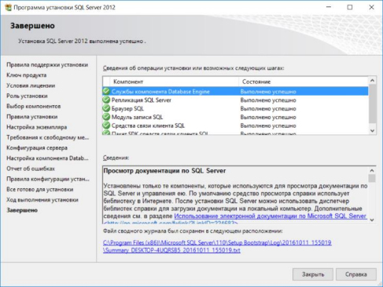
Рисунок 16. Завершение установки ПО.
ВНИМАНИЕ: В целях обеспечения дополнительный мер безопасности ПО ДЦ «ЮГ» использует для соединений с SQL Server не стандартный порт 1433 протокола TCP/IP, а измененный 7433. Изменение значения порта производится инсталлятором ПО автоматически. После завершения инсталляции это значение необходимо проверить и при необходимости изменить значение по умолчанию 1433 на значение 7433 с помощью оснастки «Диспетчер конфигурации SQL Server» SQLServerManager (Рисунок 17). Для этого в узле «Сетевая конфигурация SQL Server» необходимо выбрать протокол TCP/IP (состояние протокола должно быть «Включено»), и далее в свойствах протокола на вкладке IP-адреса изменить значение 1433 на 7433 (Рисунок 18).
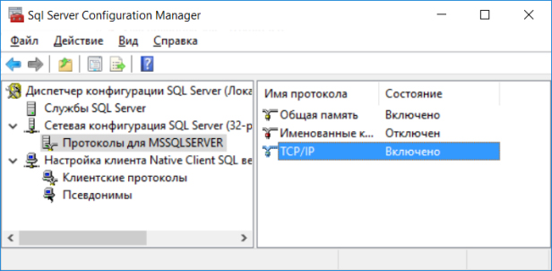
Рисунок 17. Диспетчер конфигурации SQL Server.
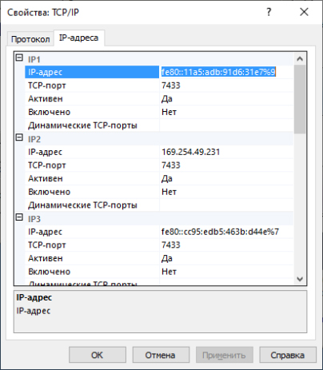
Рисунок 18. Вкладка с IP-адресами.
По окончании выполнения работ оформить запись в Журнале осмотра.
Пример записи:
Работа по установке программного обеспечения на системных блоках АРМ ДНЦ, АРМ ШН и Сервере стойки поста ДЦ специалистами сервисной организации завершена. Устройства проверены, работают нормально
ШНД
ДНЦ
8. Заключительные мероприятия, оформление результатов работы
После окончания установки программного обеспечения оповестить ДНЦ и электромеханика центрального поста об окончании работы, сделать запись в журнале ШУ-2 о проведенной работе и внести результаты выполнения работы в систему ЕК АСУИ в соответствии с требованиями, изложенными в разделе 4 «Порядка планирования, учета и контроля выполнения работ в хозяйстве автоматики и телемеханики», утверждённого распоряжением ОАО «РЖД» от 13 января 2020 г. №20/р.
Результаты работы по сопровождению программного обеспечения специализированная организация оформляет в журнале учета выполненных работ по техническому обслуживанию и ремонту устройств и систем ЖАТ по форме, представленной в регламенте взаимодействия между участниками процесса технического обслуживания и ремонта систем и устройств железнодорожной автоматики и телемеханики ОАО «РЖД», осуществляемых специализированными организациями, утвержденном распоряжением ОАО «РЖД» от 30 декабря 2017 г. № 2827р.
Начальник отдела ПКБ И
Конструктор 1 категории ПКБ И
Е.Н. Иванов
В.В. Харламов